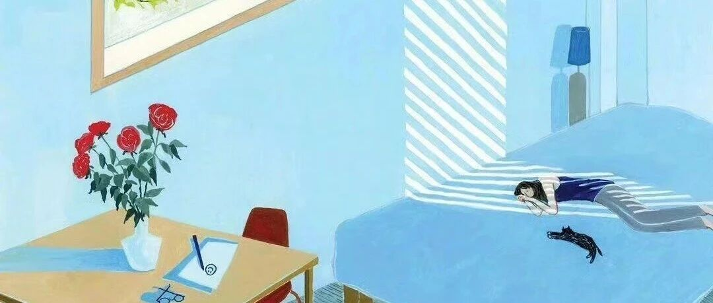

“提前退休好无聊，我又滚去上班了！”
点击关注 秋秋在分享
一起实现财务自由退休
大家好，我是秋秋。
好多人会想我提前退休得无聊，打赌不多久我就回去上班了。

事实上，我已经fire第三年了，快1000多个日子，我越来越松弛，也更了解自己。
喜欢做的事更多，花费更少。
最近，我环游东北回来，发现秋天在北京骑行真的好快乐！
第一次骑行，我去了故宫北海天安门，在胡同里和朋友喝一杯下午茶。


看着马路上的车流，非常享受闲暇的这一刻。
我可以停下来好好欣赏这个秋天，而不像从前忙忙碌碌。
都说赚钱为了更好的生活，原来“更好的我”，却连工作日闲下来几小时的自由都没有。
那天，20块钱的咖啡是我的晚餐，中午吃了牛肉，一天50块钱饱饱的很健康，一个月吃上一千块足够了。
第二次骑行，我去了清华北大，路上看到商场就去逛一逛。


我买了一双鞋子，以前的我会网购，现在发现线下一样的价格，还能试穿能挑选。
衣服护肤品生活用品，每个月1000块钱也够了。
第三次骑行，本来想去老舍故居看柿子树，意外去了一家咖啡店，和朋友在落日下拍了好多照片。


有时候我会去打卡，有时候我会安排自己泡温泉，去游乐园，看演唱会。
有时候我会一个月出去玩十几天。
但这些花费平均每个月也都在3000以内。
按我fire的计划每个月可以花1万块，实际上一个月5000，我就会生活的很好，没有在钱上委屈自己，也不感觉紧缩。
我不是不婚主义和丁克，关于房子孩子家人，我想都是要一起承担的。
每个人都有规划才会走到一起走的长远，不会说要我用fire的钱来养一大家子😢。
我的家人对我有很多理解和支持，却从未有过索取，这也是我能fire的基石吧。
每一次骑行，我都会觉得自己力气变大了一点，运动会让自己有种“人定胜天”的勇气～
这种快乐甚至不需要花钱就能获得。
我很快乐，是骑行带来的，也是我能从骑行这种不消费中就能快乐的快乐。
现在每天都很开心，fire之后的每天也很开心，每一天都属于自己的感觉真的好！
我想天长地久的把这种好日子过下去～
我会一直做喜欢的事情，但不会再本末倒置，把我的人生自主权让出去。